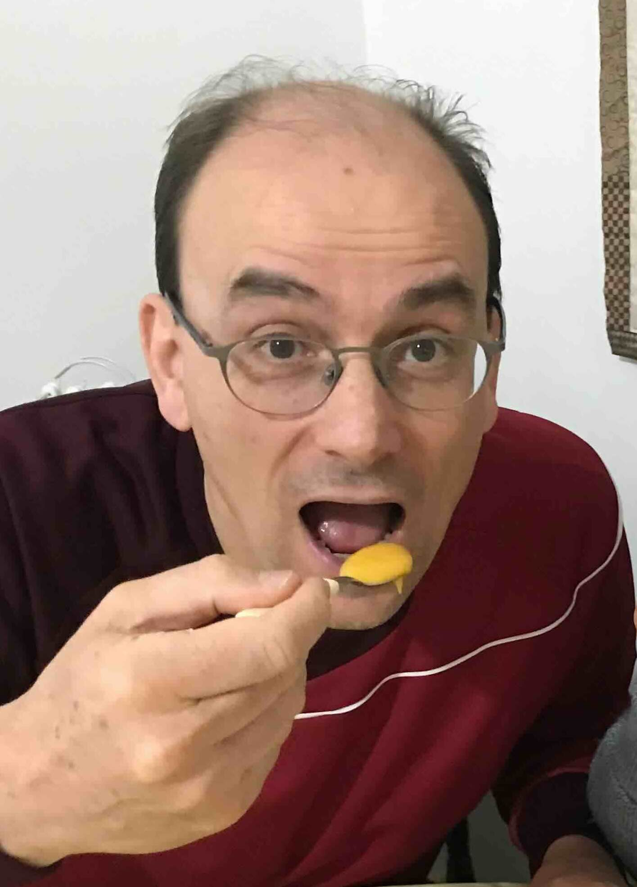

Claudio Englert | WDD 130

Olá! Meu nome é Claudio Englert e sou de Porto Alegre, Brasil. Sou avô de 7 netos. Sou bacharel em Ciências Econômicas e pós-graduado em Informática.

Olá! Meu nome é Claudio Englert e sou de Porto Alegre, Brasil. Sou avô de 7 netos. Sou bacharel em Ciências Econômicas e pós-graduado em Informática.